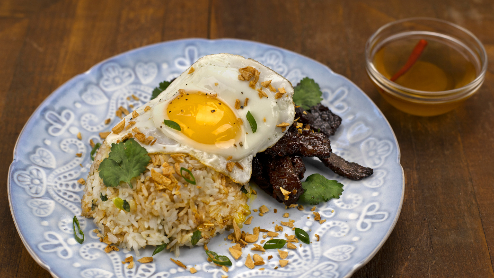
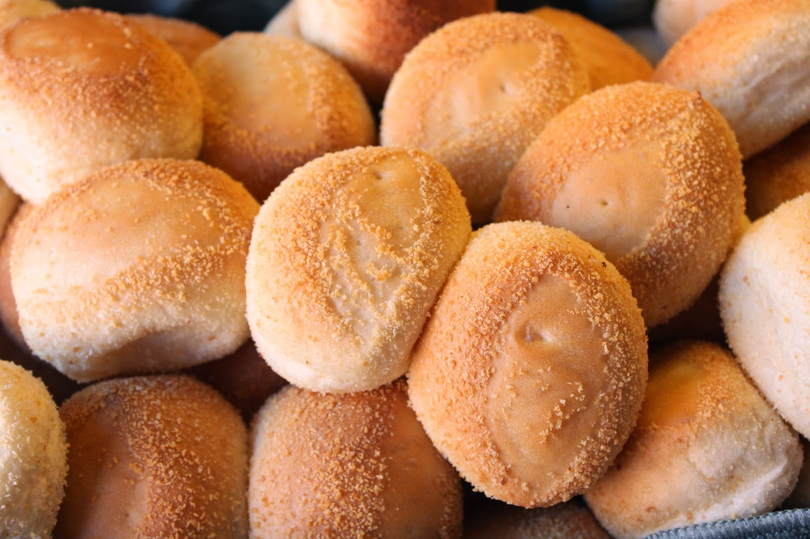

Taho
Ingredients
For the Taho:
- Silken Tofu: 1 block (around 300-400 grams)
- Sago Pearls: 1/2 cup (or substitute with tapioca pearls)
- Water: For boiling the sago pearls
For the Syrup:
- Brown Sugar: 1 cup
- 1 cup of water
- Vanilla Extract (optional): 1 teaspoon
Instructions
Prepare the Sago Pearls:
- Cook the Sago: In a pot, bring water to a boil and add the sago pearls. Cook according to package instructions (usually around 20-30 minutes) until they become translucent.
- Drain and Rinse: Once cooked, drain the sago pearls and rinse them under cold water to stop the cooking process. Set aside.
Make the Syrup (Arnibal):
- Combine Ingredients: In a saucepan, combine brown sugar and water.
- Cook: Heat over medium heat, stirring until the sugar dissolves. Allow it to simmer for about 5-10 minutes until it thickens slightly. If using, stir in vanilla extract at this point.
- Cool: Remove from heat and let it cool.
Prepare the Silken Tofu:
- Steam the Tofu: Cut the silken tofu into small cubes and steam it for about 5-10 minutes until warmed through. You can also serve it at room temperature if preferred.
Assemble the Taho:
- Layer the Ingredients: In serving cups, place a few spoonfuls of sago pearls at the bottom.
- Add Tofu: Spoon the warm silken tofu on top of the sago pearls.
- Pour Syrup: Drizzle the arnibal syrup over the tofu.
- Serve: Enjoy warm, and you can add a little more syrup to taste if desired.
Tapsilog

Ingredients
For the Tapa:
- Beef: 1 pound (sirloin or flank steak, thinly sliced)
- Soy Sauce: 1/4 cup
- Vinegar: 2 tablespoons (optional)
- Garlic: 4-6 cloves (minced)
- Sugar: 2 tablespoons (brown sugar preferred)
- Pepper: 1 teaspoon (black pepper)
- Salt: To taste
- Cooking Oil: For frying
For the Sinangag (Garlic Fried Rice):
- Cooked Rice: 4 cups (preferably day-old rice)
- Garlic: 6-8 cloves (minced)
- Oil: 2 tablespoons
- Salt: To taste
For the Itlog (Fried Egg):
- Eggs: 4 (or as desired)
- Oil: For frying
Instructions
Prepare the Tapa:
- Marinate the Beef: In a bowl, combine soy sauce, vinegar (if using), minced garlic, sugar, black pepper, and salt. Add the sliced beef and mix well to coat. Marinate for at least 1 hour (or overnight in the refrigerator for better flavor).
- Cook the Tapa: Heat oil in a frying pan over medium-high heat. Add the marinated beef in a single layer (you may need to do this in batches) and cook until browned and cooked through, about 3-5 minutes per side. Remove from the pan and set aside.
Make the Sinangag (Garlic Fried Rice):
- Sauté the Garlic: In the same pan (add more oil if necessary), sauté minced garlic over medium heat until golden brown and fragrant.
- Add Rice: Add the cooked rice to the pan, breaking apart any clumps. Stir-fry for about 5 minutes until heated through and well combined with the garlic. Season with salt to taste.
Fry the Eggs:
- Heat Oil: In a separate pan, heat a bit of oil over medium heat.
- Fry the Eggs: Crack the eggs into the pan and cook to your desired doneness (sunny side up is traditional). Season with a little salt and pepper.
Assemble the Tapsilog:
- Serve: On a plate, serve a portion of garlic fried rice, top it with the cooked tapa, and add a fried egg on the side.
- Optional: You can serve it with a side of sliced tomatoes, vinegar, or soy sauce for dipping.
Pan de Sal

Ingredients
- All-purpose flour: 4 cups (plus extra for dusting)
- Active dry yeast: 2 ¼ teaspoons (1 packet)
- Warm water: 1 cup (about 110°F / 43°C)
- Milk: ½ cup (lukewarm)
- Sugar: ⅓ cup (adjust for sweetness preference)
- Salt: 1 teaspoon
- Butter: ¼ cup (melted and cooled)
- Egg: 1 large
- Breadcrumbs: For coating the rolls
Instructions
Activate the Yeast:
- In a small bowl, combine warm water, 1 tablespoon of sugar, and yeast. Stir gently and let it sit for about 5-10 minutes until the mixture becomes frothy, indicating that the yeast is activated.
Prepare the Dough:
- In a large mixing bowl, combine the remaining sugar, salt, melted butter, and the lukewarm milk. Stir well to incorporate the ingredients.
- Add the egg and mix.
- Slowly add 2 cups of the flour into the mixture and stir to combine.
- Add the activated yeast mixture and mix well.
- Gradually add the remaining flour, one cup at a time, while mixing until a dough forms.
Knead the Dough:
- Transfer the dough to a lightly floured surface and knead for about 8-10 minutes, until the dough is smooth and elastic.
- If the dough is sticky, you can add a bit more flour, but be careful not to add too much.
Let the Dough Rise:
- Place the dough in a lightly greased bowl and cover it with a damp cloth or plastic wrap. Let it rise in a warm, draft-free place for about 1 to 1.5 hours or until the dough has doubled in size.
Shape the Pandesal:
- Once the dough has risen, punch it down to release the air.
- Divide the dough into small pieces (about 1.5 to 2 ounces each). Roll each piece into a smooth ball.
- Coat each dough ball lightly with breadcrumbs and place them on a greased or parchment-lined baking sheet, about 2 inches apart.
Final Rise:
- Cover the rolls with a clean cloth and let them rise again for about 30 minutes to 1 hour until they double in size.
Bake the Pandesal:
- Preheat your oven to 350°F (175°C).
- Bake the rolls for about 15-20 minutes, or until they turn golden brown on top.
- Remove from the oven and let the pandesal cool slightly on a wire rack before serving.